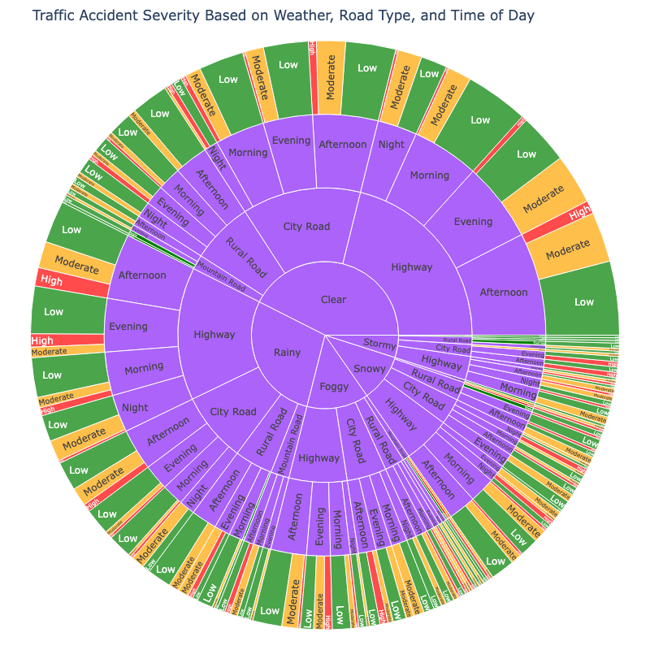

Projects
Jazz Analysis

Designed to explore trends in Ayo Dosunmu's performance on the Chicago Bulls over time using data from the NBA API.
30 Days of Data Visualizations

Exploring the art of storytelling with data — 30 days of creating impactful and insightful visualizations.